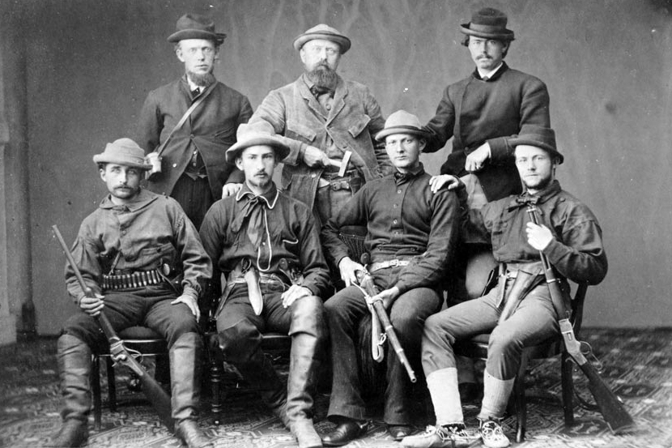

In the 1870s, Cope's and Marsh's professional attentions were directed to the American West by word of large fossil finds. Using his influence in Washington, D.C., Cope was granted a position on the U.S. Geological Survey under Ferdinand Hayden. While the position offered no salary, it afforded Cope a great opportunity to collect fossils in the West and publish his finds. Cope's flair for dramatic writing suited Hayden, who needed to make a popular impression with the official survey reports. In June 1872 Cope set off on his first trip, intending to observe the Eocene bone beds of Wyoming for himself. This caused a rift between Cope, Hayden, and Leidy. It was Leidy who had enjoyed receiving many of the fossils from Hayden's collection until Cope joined the survey, and now Cope was hunting for fossils in Leidy's staked territory—at the same time Leidy was to be collecting. Hayden attempted to smooth things over with Leidy in a letter:
I asked him not to go into that field, that you were going there. He laughed at the idea of being restricted to any locality and said he intended to go whether I aided him or not. I was anxious to secure the cooperation of such a worker as an honor to my corps. I could not be responsible for the field he selected in as much as I pay him no salary and a portion of his expenses. You will see therefore that while it is not a pleasant thing to work in competition with others it seems almost a necessity. You can sympathize.
Cope took his family with him as far as Denver, while Hayden tried to keep Cope and Leidy from prospecting in the same area. Following a tip from geologist Fielding Bradford Meek, Cope also intended to investigate reports of bones Meek had found near Black Buttes Station and the railroad. Cope found the site and some skeletal remains of a dinosaur he dubbed Agathaumas sylvestris. Believing he had the full support of Hayden and the survey, Cope then traveled to Fort Bridger in June, only to find that the men, wagons, horses, and equipment he expected were not there. Cope cobbled together an outfit at his own expense, consisting of two teamsters, a cook, and a guide, along with three men from Chicago who were interested in studying with him. As it turned out, two of Cope's men were in fact in the employ of Marsh. When the rival paleontologist found out his own men were taking Cope's money, he was furious. While the men tried to assure Marsh they were still his men (one suggested he took the job in order to lead Cope away from good fossils), Marsh's laziness in soliciting firm agreements and payments may have caused them to seek other work. Cope's journey took the expedition through rugged country only Hayden had surveyed, and he discovered dozens of new species. Meanwhile, one of Marsh's men accidentally forwarded some of his material to Cope instead. On receiving the fossils, Cope sent them back to Marsh, but further damage had been done to their relationship.
Any pretense of cordiality between Cope and Marsh ended in 1872, and by spring 1873 open hostility ensued. At the same time, Leidy, Cope and Marsh were making great discoveries of ancient reptiles and mammals in the Western bone beds. The paleontologists had a habit of making hasty telegrams eastward describing their finds, only publishing fuller accounts after returning from trips. Among the new specimens described by the men were Uintatherium, Loxolophodon, Eobasileus, Dinoceras, and Tinoceras. The problem was that many of these finds were not uniquely different from each other; in fact, Cope and Marsh knew that some of the fossils they were collecting had already been found by the others. As it turned out, many of Marsh's names were valid, while none of Cope's were. Marsh also placed the new species into a new order of mammals, Cinocerea. Cope was humiliated and powerless to stop his rival's changes. Instead, he published a broad analytical study where he proposed a new plan of classification for the Eocene mammals, in which he discarded Marsh's genera in favor of his own. Marsh remained steadfast and continued to claim that all of Cope's names for Dinocerata were incorrect.
Marsh (back row and center), surrounded by armed assistants for his 1872 expedition. Marsh spent little time in the field himself, generally delegating these tasks to his agents.
While the scientists argued over classifications and nomenclature, they also returned west for more fossils. Marsh made his last trip backed by Yale in 1873, with a large group of thirteen students accompanying him, protected by a group of soldiers who wanted to make a show of force to the Sioux tribe. Due to concerns over his more lavish and expensive expeditions in years past, Marsh had the students pay their own way, and the trip cost Yale only $1857.50, far less than the $15,000 (over $200,000 in modern currency) that Marsh had claimed for the previous expedition. This excursion would prove to be Marsh's last: for the rest of the Bone Wars, Marsh preferred to enlist the services of local collectors. Though he had enough bones to study for years, the scientist's appetite for more would grow. Cope was even more prolific in his collecting that season than he was in 1872, although Marsh's penchant for cultivating collectors of his own meant that at Bridger his rival was persona non grata. Tired of working under Hayden, Cope found a paying job with the Army Corps of Engineers, but was limited by this federal association; while Cope had to tag along on surveys, Marsh could collect wherever he pleased.
The two scientists' attention turned to the Dakota Territory in the mid-1870s, where the discovery of gold in the Black Hills increased Native American tensions with the United States. Marsh, desiring the fossils found in that region, became embroiled in Army-Indian politics. In order to gain the support of Chief Red Cloud of the Sioux to prospect, Marsh promised Red Cloud payment for fossils collected and that he would return to Washington, D.C. and lobby on their behalf about their improper treatment. In the end, Marsh slipped out of camp and according to his own (possibly romanticized) accounts, amassed cartloads of fossils and retreated just before a hostile Miniconjou party arrived. Marsh, for his part, did lobby the Interior Department and President Ulysses S. Grant on behalf of Red Cloud, but his motives might have been to make a name for himself against the unpopular Grant administration. By 1875, both Cope and Marsh paused in their collecting, feeling financial strain and needing to catalogue their backlogged finds, but new discoveries would return them to the West before decade's end.